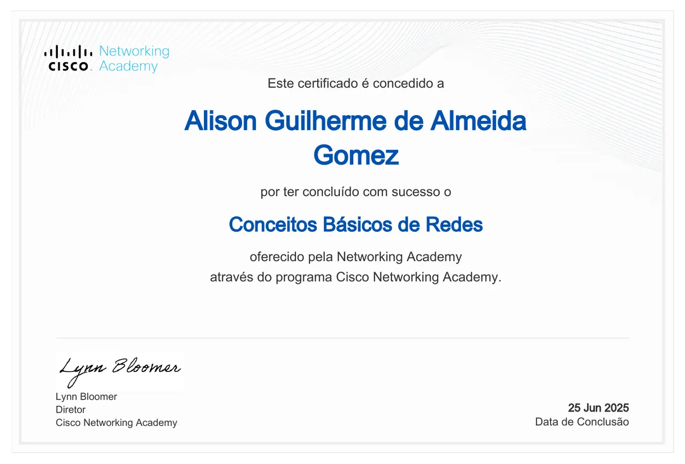
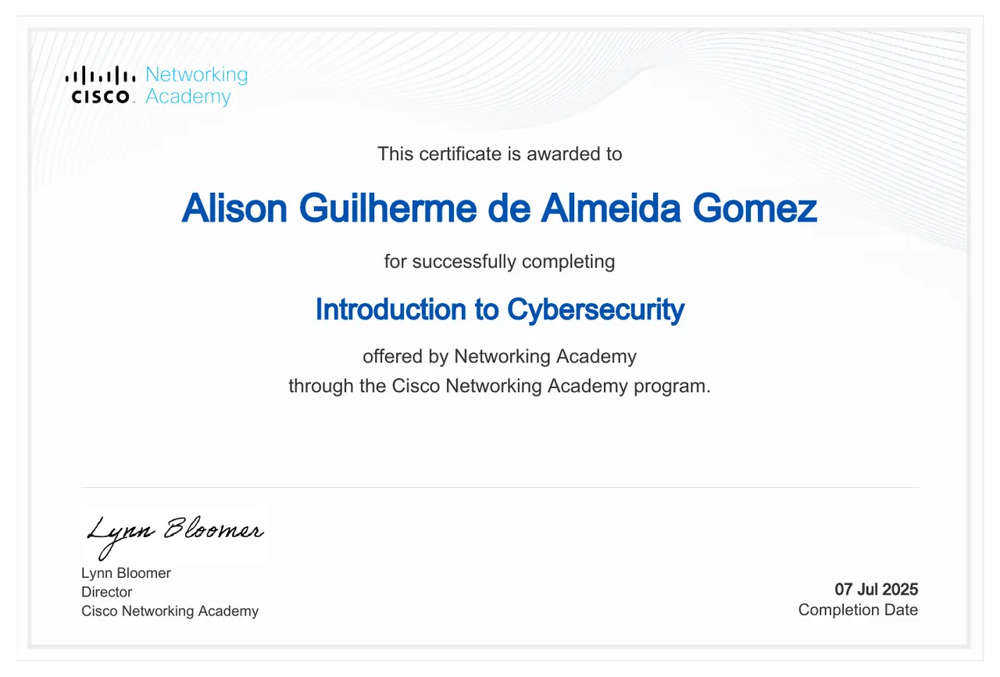
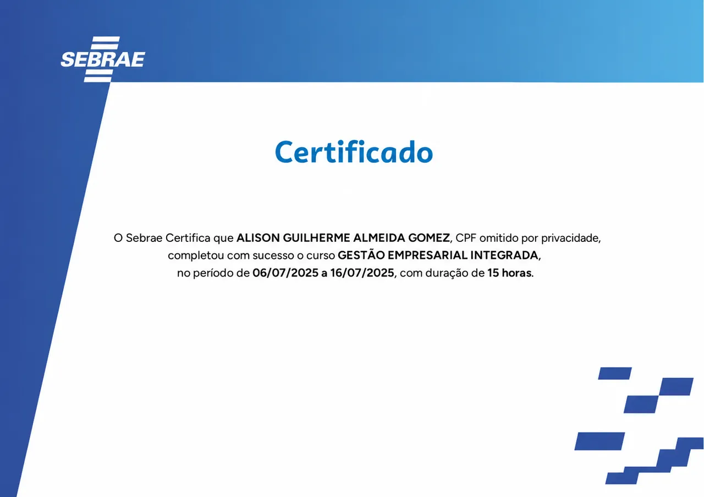
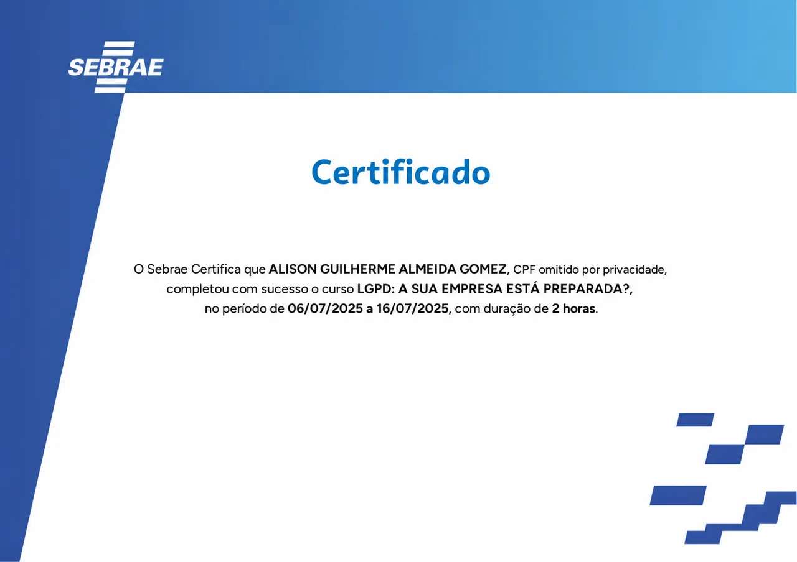
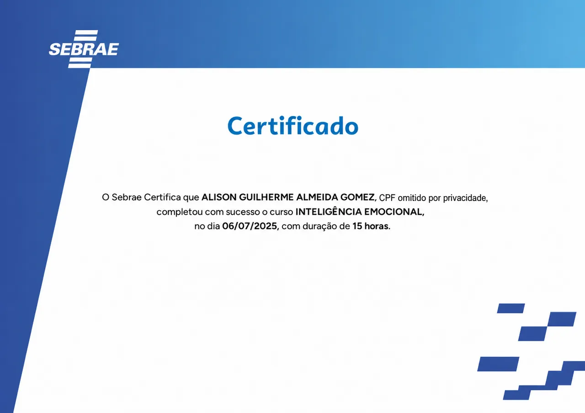

Bacharelado em Sistemas de Informação
Fundação Hermínio Ometto (FHO). Desenvolvi o Sinalyx com minha equipe como Trabalho de Conclusão de Curso.
Conclusão prevista para 2026.
Minha graduação, os cursos que estou fazendo e os certificados que já conquistei.
Fundação Hermínio Ometto (FHO). Desenvolvi o Sinalyx com minha equipe como Trabalho de Conclusão de Curso.
Conclusão prevista para 2026.
Certificações obtidas por formação e avaliação.
Cursos de redes, suporte, segurança da informação e outras áreas que fazem parte dos meus estudos.


Nome no certificado: IT Customer Support Basics · 07/07/2025
Ver certificado ↗

